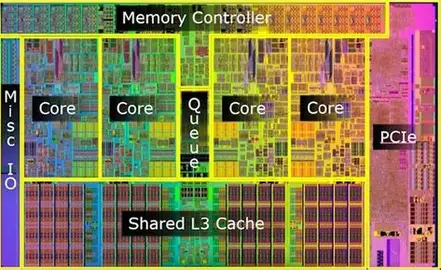

We will build a parallel simulator of thermal diffusion on a dynamic 2D mesh where elements deform based on temperature, inspired by shape-memory alloys. The simulation will model heat flow and structural feedback across a processor floorplan, parallelized using C++ and OpenMP/pthreads on multi-core CPU systems.
Project web page: https://alanwang8.github.io/15418-final-project/

Our project focuses on simulating how heat spreads and causes stress in a processor chip, taking inspiration from materials like shape-memory alloys (SMAs) that deform predictably with temperature. While real chips don’t actively deform like SMAs, thermal hotspots still cause small expansions and mechanical stress in silicon and metal layers, which can affect heat flow and reliability. Our goal is to model this thermomechanical coupling in a simplified but realistic way.
We represent the chip as a 2D mesh of cells, where each cell corresponds to a functional unit, such as an ALU, cache block, or interconnect region. Each cell has a temperature, generates heat based on its activity, and conducts heat to its neighbors. The core computation involves updating each cell’s temperature from its neighbors and its own power generation, then computing how much it expands due to heating. The expansion slightly changes the effective distance to neighboring cells, which affects heat conduction in the next timestep.
This simulation is compute-intensive because each cell must repeatedly update both temperature and strain, and these updates depend on the current state of neighboring cells. The problem is naturally suited to parallelism: updates for different cells can be computed simultaneously since each timestep only depends on the previous values. However, as hotspots form, some regions may require more computation than others, creating potential load imbalance. Parallelizing over cells or blocks of cells allows multiple cores to work together efficiently, speeding up the simulation while handling the evolving workload.
This problem is challenging due to the dynamic feedback loop between heat and geometry.
Systems project — what the simulator will be capable of: A shared-memory C++ program that steps a 2D mesh representing a simplified processor floorplan forward in time: each timestep applies explicit finite-difference–style thermal diffusion, then updates cell geometry and neighbor conductances to capture thermo-elastic feedback. The implementation will expose tunable material/power maps, thread count, and scheduling so we can measure parallel behavior on real lab machines.
Hoped performance (systems): We aim to demonstrate clear multi-core speedups and to quantify how much coupling and mesh dynamics cost relative to a static baseline. Specific numeric targets and justification appear under Plan to achieve below; stretch targets under Hope to achieve.
The following items are what we believe we must complete for a successful project and the grade we expect. They are ordered from simulation core through evaluation.
Cell characteristics:
Customizable aspects:
Goal: Model thermomechanical feedback: cells expand/contract depending on temperature, affecting thermal coupling.
Cell characteristics:
Customizable aspects:
Goal: Accelerate simulation by updating many cells simultaneously.
Considerations per cell:
Customizable aspects:
Goal: Measure how efficiently the simulation scales across multiple threads and explore the effects of different parallelization strategies. The focus is on achieving high speedup and maintaining good load balance, rather than on detailed thermal correctness.
Metrics:
Customizable aspects (for achievable experiments):
Analysis approach:
Potential solutions:
We may not know final numbers until implementation lands, but we commit to concrete, measurable goals and explain why they are realistic:
Extra goals if the project goes well and we get ahead of schedule. Each includes why it might be reachable.
Why it might be achievable: If the core timestep is already fast on moderate meshes, throttling visualization resolution and timestep count can keep an interactive loop within tens of milliseconds per frame on lab CPUs.
Why it might be achievable: A simple file- or stdin-driven power trace and a small set of CLI flags reuse the same engine without rewriting the hot loop.
Why it might be achievable: Parsing a coarse JSON/CSV block list into rectilinear regions is orthogonal to the timestep kernel and can follow once the mesh data structure stabilizes.
Why it might be achievable: Dumping per-step PNGs or CSVs from existing fields is mostly I/O plumbing once the simulation produces stable outputs.
Stretch performance target (hope): If tuning succeeds, we would like to approach roughly ~6–8× speedup at 8 threads on the same baseline mesh as in our plan—beyond the planned 4× floor—because reducing barrier overhead or improving SoA layout could recover a meaningful fraction of serial time. We will only claim this if measurements support it.
If we fall behind, we will shrink scope in a defined order so we still ship a defensible parallel study:
This is primarily a systems implementation project, but our evaluation is designed to answer concrete questions about the workload and machine mapping:
We have chosen C++ with OpenMP/pthreads for shared-memory parallelism. This platform allows for fine-grained control over memory layout (Structure-of-Arrays vs. Array-of-Structures), which is critical when managing the cache locality of a mesh that is physically moving in memory.
| Week | Task / milestone |
|---|---|
| Mar 23–25 | Finalize design and submit proposal (due Mar 25). |
| Mar 26–31 | Implement serial static mesh and verify heat diffusion correctness. |
| Apr 1–7 | Implement temperature-dependent expansion and initial OpenMP parallel loops. |
| Apr 8–14 | Milestone: Working parallel prototype; measure initial speedups (milestone report due Apr 14). |
| Apr 15–21 | Refine data structures for unstructured mesh; experiment with dynamic scheduling. |
| Apr 22–28 | Run final experiments across various mesh sizes and thread counts. |
| Apr 29–30 | Final report writing and poster preparation (final report due Apr 30). |
| May 1 | Poster session (15-418: 8:30am–11:30am, Friday May 1). |